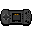
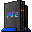
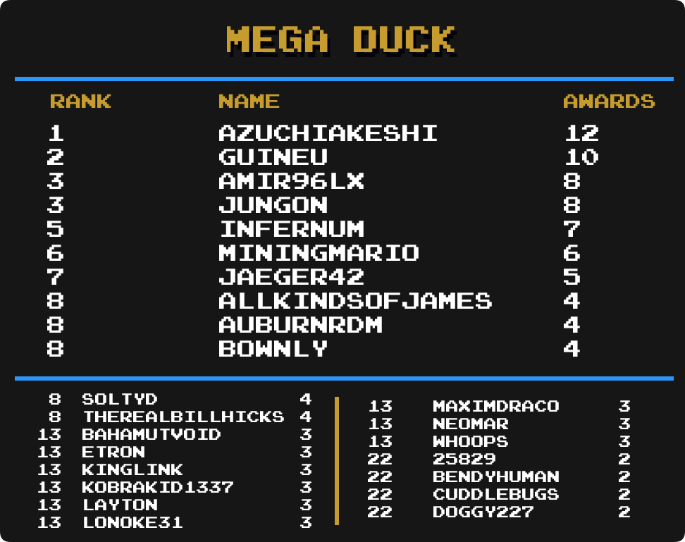
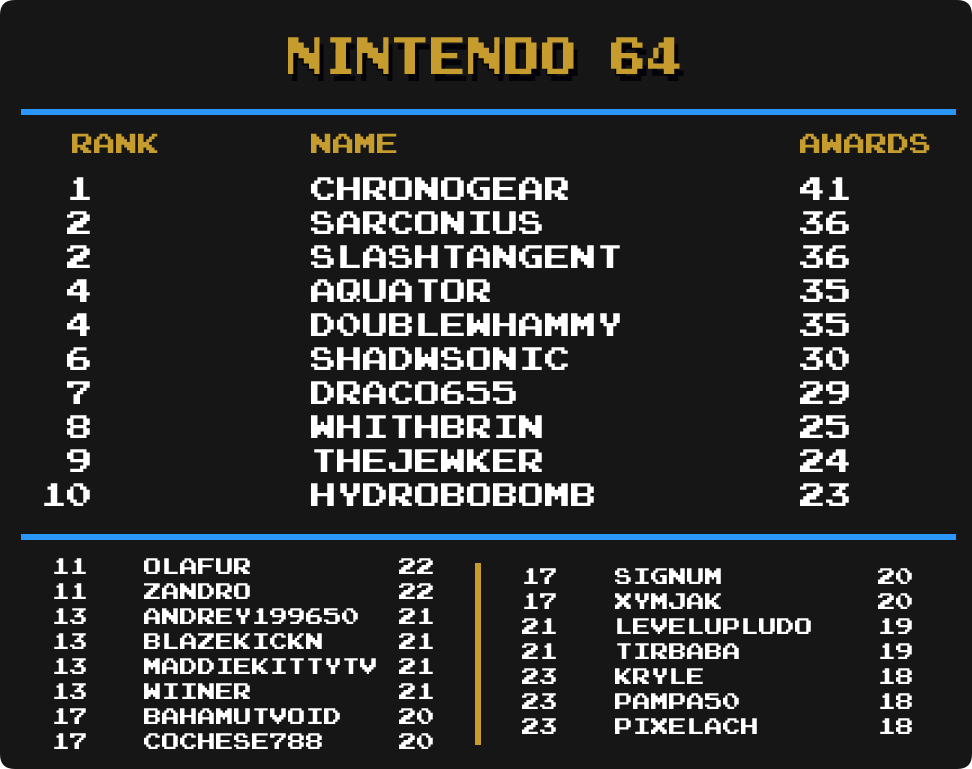
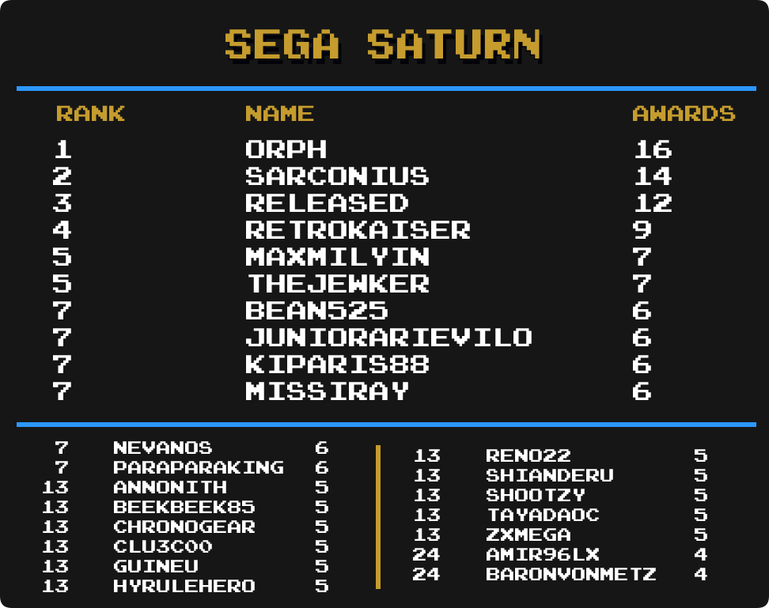

Top Masteries
 By
Amir96lx
By
Amir96lx
Contents
- Intro
- Current Champions
- Notable Milestones
-
Category Rankings
- Total Awards
- Total Awards (Excluding Hacks)
- Event Awards
- Site Awards
- Hack Awards
- Homebrew Awards
- Subset Awards
- Amstrad CPC
- Apple II
- Arcade
- Arcadia 2001
- Arduboy
- Atari 2600
- Atari Jaguar CD
- Dreamcast
- Elektor TV Games Computer
- Fairchild Channel F
- Game Boy
- Game Boy Advance
- Game Boy Color
- Game Gear
- Interton VC 4000
- Master System
- Mega Drive
- Mega Duck
- Nintendo 64
- NES
- Nintendo DS
- Nintendo DSi
- PC Engine
- PC Engine CD
- PC-8000/8800
- PlayStation
- PlayStation 2
- PlayStation Portable
- Pokémon Mini
- Sega Saturn
- Sega CD
- SG-1000
- SNES
- Uzebox
- Virtual Boy
- WASM-4
- Watara Supervision
Intro
We are going to take a look at another metric for greatness, Mastery Awards. Mastery awards are given to users when they complete every achievement for a given set in hardcore mode. Users wear mastery awards as a badge of honor on their profile page representing all the hard work they put into truly becoming a master of the game.
Below we will take a look at which users rank among the best with the most mastery awards in several categories well as notable updates from the previous month to each individual category. Check to see how you rank among the rest of the community members.
Special thanks to  Nydaxn for creating the ranking image templates.
Nydaxn for creating the ranking image templates.
* Data as of January 1st 2023.
Current Champions
|
|
|
Mastery Awards | |
|---|---|---|---|
 Total Awards
|  Infernum Infernum | 1317 | |
| Event Awards
|  Hotscrock Hotscrock | 28 | |
| Site Awards
|  televandalist televandalist | 28 | |
| Hacks
|  HolyShinx HolyShinx | 274 | |
| Homebrews
|  AuburnRDM AuburnRDM | 234 | |
| Subsets
|  Blazekickn Blazekickn | 27 | |
 3DO Interactive Multiplayer
|
 Vyach59 Vyach59 | 13 | |
 Amstrad CPC
|  roukanumachi roukanumachi | 15 | |
 Apple II
|  Dogmeatman Dogmeatman | 22 | |
 Arcade
|  LordBBH LordBBH | 79 | |
 Arcadia 2001
|  Maximdraco Maximdraco | 21 | |
 Arduboy
| Infernum | 48 | |
 Atari 2600
|  PMniac PMniac | 122 | |
 Atari 7800
| PMniac | 20 | |
 Atari Jaguar
| PMniac | 11 | |
 Atari Jaguar CD
|  sludgemastic sludgemastic | 8 | |
 Atari Lynx
|
 guineu guineu Jungon Jungon
| 8 | |
 ColecoVision
| PMniac | 23 | |
 Dreamcast
|  ChrisGold97 ChrisGold97 | 21 | |
 Elektor TV Games Computer
| sludgemastic | 22 | |
 Fairchild Channel F
| Maximdraco | 31 | |
 Game Boy
|  Shootzy Shootzy | 150 | |
 Game Boy Advance
|  bonecrusher1022 bonecrusher1022 | 171 | |
Game Boy Color
|  valeforge valeforge | 121 | |
 Game Gear
| Nydaxn | 88 | |
 Intellivision
| Jungon | 22 | |
 Interton VC 4000
|  DrunkeSuperman DrunkeSuperman | 24 | |
 Magnavox Odyssey 2
| Maximdraco | 19 | |
 Master System
| Jungon | 102 | |
 Mega Drive
|  DUT DUT | 136 | |
 Mega Duck
|  AzuchiAkeshi AzuchiAkeshi | 12 | |
 MSX
| guineu | 14 | |
Nintendo 64
|  ChronoGear ChronoGear | 40 | |
 Neo Geo CD
|
 CthulhuThe3rd LordBBH CthulhuThe3rd LordBBH
|
4 | |
 Neo Geo Pocket
|  MelodyAsh MelodyAsh | 16 | |
 NES
|  SanMarino SanMarino | 246 | |
 Nintendo DS
|  Olafur Olafur | 122 | |
 Nintendo DSi
|  MiningMario MiningMario | 31 | |
 PC Engine
| Infernum | 38 | |
 PC Engine CD
|
 Annonith Infernum Annonith Infernum
| 10 | |
 PC-8000/8800
|  Orph Orph | 15 | |
 PC-FX
|  Nanashi Nanashi | 10 | |
 PlayStation
|  MattF89Ryu MattF89Ryu | 127 | |
 PlayStation 2
| Infernum | 68 | |
 PlayStation Portable
|  Waishler Waishler | 58 | |
 Pokémon Mini
|  Sylrifaide Sylrifaide | 36 | |
 Sega 32X
| DUT | 6 | |
 Sega Saturn
| Orph | 16 | |
 Sega CD
|  Drakub Drakub | 19 | |
 SG-1000
| Jungon | 48 | |
 SNES
|  danibodom danibodom | 232 | |
 Uzebox
|  Dominick Dominick | 21 | |
 Vectrex
| Jungon | 14 | |
 Virtual Boy
|
Jungon Grahamtams Grahamtams
| 18 | |
 WASM-4
| Amir96lx | 53 | |
 Watara Supervision
|  Sarconius Sarconius | 52 | |
 WonderSwan
|  GregHouse007 GregHouse007 | 8 |
Notable Milestones
1300 Mastery Awards
| Infernum |
800 Mastery Awards
 Lonoke31 Lonoke31 |
700 Mastery Awards
 AllKindsOfJames AllKindsOfJames |
600 Mastery Awards
 Whoops Whoops |
500 Mastery Awards
| Olafur |
MiningMario |
400 Mastery Awards
 TheLooseGroose TheLooseGroose |
300 Mastery Awards
 CobaltZeroni CobaltZeroni |
Dominick |
GregHouse007 |
 missiray missiray |
 VenHur VenHur |
 XashTheStampede XashTheStampede |
200 Mastery Awards
 4lexGrey 4lexGrey |
Dogmeatman |
 LeakyComet LeakyComet |
 Tiagofsp Tiagofsp |
 Tymestalker Tymestalker |
 vintageclassicgamer vintageclassicgamer |
 xClawz xClawz |
100 Mastery Awards
 Agnam
Agnam CanadianLooni
CanadianLooni Cassievania
Cassievania dokaikan
dokaikan dreamer72
dreamer72 flaviodnz1
flaviodnz1 gaaradesert
gaaradesert gnarblast
gnarblast Hexcreed
Hexcreed ManyHours
ManyHours nikola11
nikola11 quinnlivin
quinnlivin RebatoZoppau
RebatoZoppau Roberto86
Roberto86 Swagneto
Swagneto vinegret
vinegret vivibloom
vivibloom Vlt0
Vlt0 Xionx
XionxCategory Rankings
Total Awards
-
Infernum remains in 1st with 1317 total mastery awards.
-
Amir96lx has moved up 2 spots and is in 4th place.
-
Lonoke31 has moved up 2 spots and is in 7th place.
-
 Xymjak has moved up 2 spots and is in 16th place.
Xymjak has moved up 2 spots and is in 16th place. -
Whoops has moved up 3 spots and is in 17th place.
-
Olafur has moved up 1 spot and is in 23rd place.
-
MiningMario has made it into the top 25 and is in 24th place.
-
 BrothersGames has made it into the top 25 and is in 25th place.
BrothersGames has made it into the top 25 and is in 25th place.
Total Awards (Excluding Hacks)
-
Infernum remains in 1st with 1248 total mastery awards.
-
Lonoke31 has moved up 1 spot and is in 9th place.
-
 NEOMAR has moved up 1 spot and is in 10th place.
NEOMAR has moved up 1 spot and is in 10th place. -
Blazekickn has moved up 1 spot and is in 13th place.
-
Whoops has moved up 3 spots and is in 15th place.
-
sludgemastic has made it into the top 25 and is in 22nd place.
-
MiningMario has made it into the top 25 and is in 25th place.
Event Awards
-
Hotscrock has taken 1st place with 28 total mastery awards.
-
 Tayadaoc has moved up 1 spot and is in 7th place.
Tayadaoc has moved up 1 spot and is in 7th place. -
 msdmario has moved up 1 spot and is tied for 8th place.
msdmario has moved up 1 spot and is tied for 8th place. -
 FlamingDoom has moved up 3 spots and is in a 6-way tie for 14th place.
FlamingDoom has moved up 3 spots and is in a 6-way tie for 14th place. -
 IcePhoenix has moved up 3 spots and is in a 6-way tie for 14th place.
IcePhoenix has moved up 3 spots and is in a 6-way tie for 14th place. -
 TheJohanx has moved up 4 spots and is in a 6-way tie for 14th place.
TheJohanx has moved up 4 spots and is in a 6-way tie for 14th place. -
 Whynot15 has made it into the top 25 and is in a 6-way tie for 14th place.
Whynot15 has made it into the top 25 and is in a 6-way tie for 14th place. -
 amine456 has moved up 3 spots and is in a 6-way tie for 20th place.
amine456 has moved up 3 spots and is in a 6-way tie for 20th place. -
 Doggy227 has moved up 2 spots and is in a 6-way tie for 20th place.
Doggy227 has moved up 2 spots and is in a 6-way tie for 20th place.
Site Awards
-
televandalist remains in 1st with 27 total mastery awards.
-
 SlashTangent has moved up 2 spots and is in a 3-way tie for 5th place.
SlashTangent has moved up 2 spots and is in a 3-way tie for 5th place. -
 TheMysticalOne has moved up 3 spots and is tied for 8th place.
TheMysticalOne has moved up 3 spots and is tied for 8th place. -
 GalacticSpear has moved up 2 spots and is in a 5-way tie for 14th place.
GalacticSpear has moved up 2 spots and is in a 5-way tie for 14th place. -
Hotscrock has moved up 2 spots and is in a 5-way tie for 14th place.
-
 Jamiras has moved up 2 spots and is in a 3-way tie for 19th place.
Jamiras has moved up 2 spots and is in a 3-way tie for 19th place. -
Tayadaoc has made it into the top 25 and is in a 3-way tie for 19th place.
-
 Delmaru has moved up 3 spots and is in a 5-way tie for 22nd place.
Delmaru has moved up 3 spots and is in a 5-way tie for 22nd place.
Hack Awards
-
HolyShinx remains in 1st with 274 total mastery awards.
-
 Aquator has moved up 1 spot and is in 6th place.
Aquator has moved up 1 spot and is in 6th place. -
 Skystarmania has moved up 1 spot and is in 9th place.
Skystarmania has moved up 1 spot and is in 9th place. -
 chocolatiel has moved up 2 spots and is tied for 10th place.
chocolatiel has moved up 2 spots and is tied for 10th place. -
Lonoke31 has moved up 3 spots and is in 15th place.
Homebrew Awards
-
AuburnRDM remains in 1st with 234 total mastery awards.
-
Amir96lx has moved up 1 spot and is in 3rd place.
-
Whoops has moved up 1 spot and is in 5th place.
-
 Advent has moved up 1 spot and is in 12th place.
Advent has moved up 1 spot and is in 12th place. -
 Searo has moved up 9 spots and is in 15th place.
Searo has moved up 9 spots and is in 15th place. -
 MarioKness has moved up 1 spot and is in 16th place.
MarioKness has moved up 1 spot and is in 16th place. -
 Sutarion has moved up 2 spots and is in 18th place.
Sutarion has moved up 2 spots and is in 18th place.
Subset Awards
-
Blazekickn remains in 1st with 27 total mastery awards.
-
Sylrifaide has moved up 1 spot and is in 5th place.
-
 Pikacshu has moved up 2 spots and is in a 3-way tie for 9th place.
Pikacshu has moved up 2 spots and is in a 3-way tie for 9th place. -
 PrimalGiratina has moved up 1 spot and is in a 3-way tie for 9th place.
PrimalGiratina has moved up 1 spot and is in a 3-way tie for 9th place. -
 xenoriddley has moved up 2 spots and is tied for 12th place.
xenoriddley has moved up 2 spots and is tied for 12th place. -
 MaxMilyin has moved up 10 spots and is in a 3-way tie for 14th place.
MaxMilyin has moved up 10 spots and is in a 3-way tie for 14th place. -
 HippopotamusRex has made it into the top 25 and is in a 14-way tie for 17th place.
HippopotamusRex has made it into the top 25 and is in a 14-way tie for 17th place.
Amstrad CPC
-
roukanumachi remains in 1st with 15 total mastery awards.
-
 SilentsongEQ has moved up 2 spots and is in 2nd place.
SilentsongEQ has moved up 2 spots and is in 2nd place. -
 NeuroVoid has moved up 6 spots and is in a 3-way tie for 12th place.
NeuroVoid has moved up 6 spots and is in a 3-way tie for 12th place. -
 Halbarad has made it into the top 25 and is in a 5-way tie for 18th place.
Halbarad has made it into the top 25 and is in a 5-way tie for 18th place.
Apple II
-
Dogmeatman has taken 1st place with 22 total mastery awards.
-
Whoops has moved up 6 spots and is in 5th place.
-
Jamiras has moved up 4 spots and is in a 3-way tie for 6th place.
-
Amir96lx has moved up 2 spots and is in a 5-way tie for 9th place.
-
 DrunkenSuperman has made it into the top 25 and is in a 5-way tie for 9th place.
DrunkenSuperman has made it into the top 25 and is in a 5-way tie for 9th place. -
TheLooseGroose has moved up 5 spots and is in a 5-way tie for 14th place.
-
 ILLSeaBass has made it into the top 25 and is tied for 19th place.
ILLSeaBass has made it into the top 25 and is tied for 19th place. -
Advent has moved up 2 spots and is in a 7-way tie for 21st place.
-
ChronoGear has moved up 1 spot and is in a 7-way tie for 21st place.
Arcade
-
LordBBH remains in 1st with 79 total mastery awards.
-
 Fanonos has moved up 1 spot and is tied for 14th place.
Fanonos has moved up 1 spot and is tied for 14th place. -
 MarceloSSR has made it into the top 25 and is in 16th place.
MarceloSSR has made it into the top 25 and is in 16th place. -
 AliasMcDoe has moved up 1 spot and is tied for 19th place.
AliasMcDoe has moved up 1 spot and is tied for 19th place. -
 AkumaTNT has made it into the top 25 and is tied for 21st place.
AkumaTNT has made it into the top 25 and is tied for 21st place. -
 Chatnoir has made it into the top 25 and is in a 3-way tie for 23rd place.
Chatnoir has made it into the top 25 and is in a 3-way tie for 23rd place.
Arcadia 2001
-
Maximdraco has taken 1st place with 21 total mastery awards.
-
Amir96lx has moved up 1 spot and is in a 3-way tie for 6th place.
-
 midgetstrawdog has made it into the top 25 and is in a 6-way tie for 13th place.
midgetstrawdog has made it into the top 25 and is in a 6-way tie for 13th place. -
 Avirumque has made it into the top 25 and is in a 40-way tie for 19th place.
Avirumque has made it into the top 25 and is in a 40-way tie for 19th place.
Arduboy
-
Infernum remains in 1st with 48 total mastery awards.
-
NEOMAR has moved up 1 spot and is in 3rd place.
-
Dominick has moved up 1 spot and is in 7th place.
-
AllKindsOfJames has moved up 1 spot and is tied for 10th place.
-
Sutarion has moved up 5 spots and is tied for 15th place.
-
Advent has moved up 1 spot and is in a 5-way tie for 18th place.
-
 Bryan1150 has moved up 1 spot and is in a 5-way tie for 18th place.
Bryan1150 has moved up 1 spot and is in a 5-way tie for 18th place. -
Whoops has moved up 1 spot and is in a 5-way tie for 18th place.
-
 Suffa28 has moved up 1 spot and is tied for 23rd place.
Suffa28 has moved up 1 spot and is tied for 23rd place. -
 Timmay has made it into the top 25 and is tied for 23rd place.
Timmay has made it into the top 25 and is tied for 23rd place.
Atari 2600
-
PMniac remains in 1st with 122 total mastery awards.
-
sludgemastic has moved up 1 spot and is in 5th place.
-
Dogmeatman has moved up 2 spots and is in 13th place.
-
 jaguarrn has moved up 3 spots and is tied for 18th place.
jaguarrn has moved up 3 spots and is tied for 18th place. -
 Reeve42 has made it into the top 25 and is in 22nd place.
Reeve42 has made it into the top 25 and is in 22nd place. -
 Teran01 has made it into the top 25 and is tied for 23rd place.
Teran01 has made it into the top 25 and is tied for 23rd place.
Atari Jaguar CD
-
sludgemastic remains in 1st with 8 total mastery awards.
-
 aarinouma has made it into the top 25 and is in a 33-way tie for 15th place.
aarinouma has made it into the top 25 and is in a 33-way tie for 15th place. -
 Biscoitero has made it into the top 25 and is in a 33-way tie for 15th place.
Biscoitero has made it into the top 25 and is in a 33-way tie for 15th place. -
BrothersGames has made it into the top 25 and is in a 33-way tie for 15th place.
-
 Felps124 has made it into the top 25 and is in a 33-way tie for 15th place.
Felps124 has made it into the top 25 and is in a 33-way tie for 15th place. -
 Guininhas has made it into the top 25 and is in a 33-way tie for 15th place.
Guininhas has made it into the top 25 and is in a 33-way tie for 15th place.
Dreamcast
-
ChrisGold97 remains in 1st with 21 total mastery awards.
-
Orph has moved up 2 spots and is in 3rd place.
-
 Tirbaba has moved up 2 spots and is in 6th place.
Tirbaba has moved up 2 spots and is in 6th place. -
Pikacshu has moved up 2 spots and is in a 3-way tie for 7th place.
-
ChronoGear has made it into the top 25 and is in a 8-way tie for 14th place.
-
 Excessiveiser has made it into the top 25 and is in a 8-way tie for 14th place.
Excessiveiser has made it into the top 25 and is in a 8-way tie for 14th place. -
 Poefred has made it into the top 25 and is in a 8-way tie for 14th place.
Poefred has made it into the top 25 and is in a 8-way tie for 14th place. -
 Scout has moved up 4 spots and is in a 8-way tie for 14th place.
Scout has moved up 4 spots and is in a 8-way tie for 14th place. -
 Signum has moved up 4 spots and is in a 8-way tie for 14th place.
Signum has moved up 4 spots and is in a 8-way tie for 14th place. -
 Erodion has made it into the top 25 and is in a 12-way tie for 22nd place.
Erodion has made it into the top 25 and is in a 12-way tie for 22nd place.
Elektor TV Games Computer
-
sludgemastic remains in 1st with 22 total mastery awards.
-
Amir96lx has moved up 1 spot and is in 4th place.
-
 MonkeyBug has made it into the top 25 and is tied for 7th place.
MonkeyBug has made it into the top 25 and is tied for 7th place. -
Infernum has made it into the top 25 and is in a 3-way tie for 9th place.
-
 Munichcowboy has moved up 6 spots and is in a 3-way tie for 9th place.
Munichcowboy has moved up 6 spots and is in a 3-way tie for 9th place. -
MiningMario has made it into the top 25 and is tied for 12th place.
-
Sutarion has made it into the top 25 and is tied for 12th place.
-
NEOMAR has made it into the top 25 and is tied for 14th place.
-
Advent has made it into the top 25 and is in a 5-way tie for 16th place.
-
Avirumque has made it into the top 25 and is in a 5-way tie for 16th place.
-
 Kurgan has made it into the top 25 and is in a 5-way tie for 16th place.
Kurgan has made it into the top 25 and is in a 5-way tie for 16th place. -
Maximdraco has made it into the top 25 and is in a 4-way tie for 21st place.
-
 14ausher has made it into the top 25 and is in a 8-way tie for 25th place.
14ausher has made it into the top 25 and is in a 8-way tie for 25th place.
Fairchild Channel F
-
Maximdraco remains in 1st with 31 total mastery awards.
-
Teran01 has moved up 2 spots and is in a 3-way tie for 6th place.
-
 ssolle has moved up 3 spots and is in a 4-way tie for 9th place.
ssolle has moved up 3 spots and is in a 4-way tie for 9th place. -
sludgemastic has made it into the top 25 and is in a 3-way tie for 13th place.
-
 JustANormalGamer has made it into the top 25 and is in a 3-way tie for 21st place.
JustANormalGamer has made it into the top 25 and is in a 3-way tie for 21st place.
Game Boy
-
Shootzy remains in 1st with 150 total mastery awards.
-
Searo has moved up 6 spots and is tied for 10th place.
-
 CraneD has moved up 2 spots and is in a 4-way tie for 22nd place.
CraneD has moved up 2 spots and is in a 4-way tie for 22nd place. -
 TheGuineapigWizard has made it into the top 25 and is in a 4-way tie for 22nd place.
TheGuineapigWizard has made it into the top 25 and is in a 4-way tie for 22nd place.
Game Boy Advance
-
bonecrusher1022 remains in 1st with 171 total mastery awards.
-
 Tiagoxxx has moved up 1 spot and is in 6th place.
Tiagoxxx has moved up 1 spot and is in 6th place. -
NEOMAR has moved up 5 spots and is tied for 15th place.
-
AllKindsOfJames has moved up 4 spots and is in a 3-way tie for 19th place.
-
 cochese788 has moved up 2 spots and is in a 3-way tie for 19th place.
cochese788 has moved up 2 spots and is in a 3-way tie for 19th place. -
Sarconius has moved up 1 spot and is in 24th place.
-
 WanderingHeiho has made it into the top 25 and is in 25th place.
WanderingHeiho has made it into the top 25 and is in 25th place.
Game Boy Color
-
valeforge remains in 1st with 121 total mastery awards.
-
Infernum has moved up 1 spot and is tied for 3rd place.
-
Whoops has moved up 1 spot and is tied for 13th place.
-
AllKindsOfJames has moved up 2 spots and is in 16th place.
Game Gear
-
Nydaxn remains in 1st with 88 total mastery awards.
-
Infernum has moved up 1 spot and is in 7th place.
-
Waishler has moved up 1 spot and is tied for 11th place.
-
 Shianderu has moved up 5 spots and is tied for 15th place.
Shianderu has moved up 5 spots and is tied for 15th place. -
Xymjak has made it into the top 25 and is tied for 15th place.
-
Fanonos has made it into the top 25 and is in a 4-way tie for 17th place.
-
WanderingHeiho has made it into the top 25 and is in a 4-way tie for 17th place.
Interton VC 4000
-
DrunkenSuperman remains in 1st with 24 total mastery awards.
-
 Stomper has moved up 1 spot and is in 2nd place.
Stomper has moved up 1 spot and is in 2nd place. -
Whoops has moved up 3 spots and is in 6th place.
-
Advent has moved up 1 spot and is in a 3-way tie for 10th place.
-
Munichcowboy has moved up 8 spots and is in a 3-way tie for 10th place.
-
Timmay has moved up 5 spots and is in a 3-way tie for 10th place.
-
MonkeyBug has made it into the top 25 and is in a 3-way tie for 14th place.
-
Avirumque has made it into the top 25 and is in a 4-way tie for 20th place.
-
14ausher has moved up 1 spot and is in a 9-way tie for 24th place.
-
 AliTHEGoat has made it into the top 25 and is in a 9-way tie for 24th place.
AliTHEGoat has made it into the top 25 and is in a 9-way tie for 24th place.
Master System
-
Jungon remains in 1st with 102 total mastery awards.
-
Whoops has moved up 1 spot and is in a 3-way tie for 12th place.
-
 ramiroabreu has moved up 9 spots and is tied for 15th place.
ramiroabreu has moved up 9 spots and is tied for 15th place.
Mega Drive
-
DUT remains in 1st with 136 total mastery awards.
-
Nanashi has moved up 1 spot and is tied for 2nd place.
-
 azulejo has moved up 1 spot and is tied for 7th place.
azulejo has moved up 1 spot and is tied for 7th place. -
Sarconius has moved up 1 spot and is tied for 18th place.
-
 Andrey199650 has made it into the top 25 and is tied for 23rd place.
Andrey199650 has made it into the top 25 and is tied for 23rd place.
Mega Duck

-
AzuchiAkeshi remains in 1st with 12 total mastery awards.
-
Amir96lx has moved up 1 spot and is tied for 3rd place.
-
 Bownly has made it into the top 25 and is in a 5-way tie for 8th place.
Bownly has made it into the top 25 and is in a 5-way tie for 8th place.
Nintendo 64

-
ChronoGear remains in 1st with 41 total mastery awards.
-
Sarconius has moved up 1 spot and is tied for 2nd place.
-
SlashTangent has moved up 2 spots and is tied for 2nd place.
NES
-
SanMarino remains in 1st with 246 total mastery awards.
-
Infernum has moved up 1 spot and is in 13th place.
Nintendo DS

-
Olafur remains in 1st with 122 total mastery awards.
-
 Bendyhuman has moved up 1 spot and is tied for 3rd place.
Bendyhuman has moved up 1 spot and is tied for 3rd place. -
Advent has moved up 1 spot and is tied for 8th place.
-
Blazekickn has moved up 2 spots and is tied for 10th place.
-
Whoops has moved up 1 spot and is in 13th place.
-
Timmay has moved up 2 spots and is tied for 19th place.
-
Lonoke31 has moved up 2 spots and is tied for 21st place.
-
Infernum has made it into the top 25 and is tied for 24th place.
Nintendo DSi
-
MiningMario remains in 1st with 31 total mastery awards.
-
Biscoitero has made it into the top 25 and is in a 4-way tie for 15th place.
-
NEOMAR has made it into the top 25 and is in a 8-way tie for 19th place.
PC Engine
-
Infernum remains in 1st with 38 total mastery awards.
-
 KnockerKrazy has made it into the top 25 and is in a 5-way tie for 17th place.
KnockerKrazy has made it into the top 25 and is in a 5-way tie for 17th place.
PC Engine CD
-
Annonith remains in 1st with 10 total mastery awards.
tied in first
-
 Tomberry has made it into the top 25 and is in a 7-way tie for 13th place.
Tomberry has made it into the top 25 and is in a 7-way tie for 13th place. -
Xymjak has made it into the top 25 and is in a 7-way tie for 13th place.
PC-8000/8800
-
Orph remains in 1st with 15 total mastery awards.
-
 BaronVonMetz has moved up 6 spots and is in a 5-way tie for 5th place.
BaronVonMetz has moved up 6 spots and is in a 5-way tie for 5th place. -
Jungon has moved up 2 spots and is in a 5-way tie for 5th place.
-
 Skyly has made it into the top 25 and is in a 10-way tie for 14th place.
Skyly has made it into the top 25 and is in a 10-way tie for 14th place. -
Whoops has made it into the top 25 and is in a 10-way tie for 14th place.
PlayStation

-
MattF89Ryu has taken 1st place with 127 total mastery awards.
-
 FabinSS has moved up 3 spots and is in 4th place.
FabinSS has moved up 3 spots and is in 4th place. -
Infernum has moved up 1 spot and is tied for 8th place.
-
ChronoGear has moved up 1 spot and is in a 3-way tie for 12th place.
-
Amir96lx has moved up 4 spots and is in a 3-way tie for 17th place.
-
Vyach59 has made it into the top 25 and is in a 3-way tie for 17th place.
-
Sarconius has moved up 2 spots and is tied for 20th place.
-
Blazekickn has made it into the top 25 and is in 25th place.
PlayStation 2
-
Infernum remains in 1st with 68 total mastery awards.
-
 Cheshire has moved up 1 spot and is tied for 3rd place.
Cheshire has moved up 1 spot and is tied for 3rd place. -
 Abucay41 has moved up 2 spots and is in a 3-way tie for 9th place.
Abucay41 has moved up 2 spots and is in a 3-way tie for 9th place. -
xClawz has moved up 4 spots and is in a 3-way tie for 9th place.
-
TheJohanx has moved up 4 spots and is tied for 14th place.
-
 CassetteCobra has moved up 1 spot and is in a 7-way tie for 18th place.
CassetteCobra has moved up 1 spot and is in a 7-way tie for 18th place. -
 woifi has made it into the top 25 and is in a 7-way tie for 18th place.
woifi has made it into the top 25 and is in a 7-way tie for 18th place.
PlayStation Portable
-
Waishler remains in 1st with 58 total mastery awards.
-
 vaanxbahn has moved up 2 spots and is in 4th place.
vaanxbahn has moved up 2 spots and is in 4th place. -
 Varilinity has moved up 8 spots and is tied for 7th place.
Varilinity has moved up 8 spots and is tied for 7th place. -
 ZintheDestroyr has moved up 2 spots and is tied for 7th place.
ZintheDestroyr has moved up 2 spots and is tied for 7th place. -
 darkcris06 has moved up 2 spots and is tied for 11th place.
darkcris06 has moved up 2 spots and is tied for 11th place. -
TheJohanx has moved up 2 spots and is in a 3-way tie for 16th place.
-
Amir96lx has moved up 5 spots and is in a 4-way tie for 19th place.
-
 MatheusBrazuca85 has moved up 1 spot and is in a 4-way tie for 19th place.
MatheusBrazuca85 has moved up 1 spot and is in a 4-way tie for 19th place.
Pokémon Mini
-
Sylrifaide remains in 1st with 36 total mastery awards.
-
Dominick has moved up 2 spots and is in a 3-way tie for 12th place.
-
 Luissze has made it into the top 25 and is in a 3-way tie for 16th place.
Luissze has made it into the top 25 and is in a 3-way tie for 16th place. -
Searo has made it into the top 25 and is in a 4-way tie for 24th place.
-
 Thomas0644 has made it into the top 25 and is in a 4-way tie for 24th place.
Thomas0644 has made it into the top 25 and is in a 4-way tie for 24th place.
Sega Saturn

-
Orph remains in 1st with 16 total mastery awards.
-
Amir96lx has made it into the top 25 and is in a 23-way tie for 24th place.
-
BaronVonMetz has made it into the top 25 and is in a 23-way tie for 24th place.
Sega CD
-
Drakub remains in 1st with 19 total mastery awards.
-
ChronoGear has moved up 6 spots and is in a 6-way tie for 4th place.
-
NEOMAR has moved up 7 spots and is in a 7-way tie for 10th place.
SG-1000
-
Jungon remains in 1st with 48 total mastery awards.
-
 Hexadigital has moved up 1 spot and is in 3rd place.
Hexadigital has moved up 1 spot and is in 3rd place. -
 Wookash has moved up 9 spots and is in 6th place.
Wookash has moved up 9 spots and is in 6th place. -
 tmap has moved up 5 spots and is in 8th place.
tmap has moved up 5 spots and is in 8th place. -
Infernum has made it into the top 25 and is tied for 18th place.
-
vaanxbahn has made it into the top 25 and is tied for 18th place.
-
 xnaivx has made it into the top 25 and is in a 6-way tie for 20th place.
xnaivx has made it into the top 25 and is in a 6-way tie for 20th place.
SNES

-
danibodom remains in 1st with 232 total mastery awards.
-
MarceloSSR has moved up 6 spots and is in 6th place.
-
Infernum has moved up 2 spots and is tied for 7th place.
-
ChronoGear has moved up 2 spots and is in 19th place.
-
 metalbubble403 has moved up 1 spot and is tied for 22nd place.
metalbubble403 has moved up 1 spot and is tied for 22nd place. -
 bilcassonato has made it into the top 25 and is in 24th place.
bilcassonato has made it into the top 25 and is in 24th place.
Uzebox
-
Dominick remains in 1st with 21 total mastery awards.
-
Amir96lx has moved up 10 spots and is tied for 4th place.
-
Lonoke31 has moved up 2 spots and is tied for 8th place.
-
GregHouse007 has moved up 14 spots and is tied for 10th place.
-
NEOMAR has moved up 1 spot and is tied for 10th place.
-
 Sm0r3s has moved up 1 spot and is in a 5-way tie for 12th place.
Sm0r3s has moved up 1 spot and is in a 5-way tie for 12th place. -
Whoops has moved up 3 spots and is in a 5-way tie for 12th place.
-
Advent has moved up 1 spot and is in a 5-way tie for 20th place.
-
 ChocoMilk has moved up 2 spots and is in a 5-way tie for 20th place.
ChocoMilk has moved up 2 spots and is in a 5-way tie for 20th place. -
Timmay has made it into the top 25 and is in a 5-way tie for 20th place.
Virtual Boy

-
Grahamtams remains in 1st with 18 total mastery awards.
-
MarioKness has moved up 5 spots and is in a 6-way tie for 14th place.
-
Searo has made it into the top 25 and is in a 6-way tie for 14th place.
-
NEOMAR has made it into the top 25 and is in a 5-way tie for 20th place.
WASM-4
-
Amir96lx remains in 1st with 53 total mastery awards.
-
 alphacrust has moved up 6 spots and is in 5th place.
alphacrust has moved up 6 spots and is in 5th place.
Watara Supervision
-
Sarconius remains in 1st with 52 total mastery awards.
-
ChocoMilk has made it into the top 25 and is in a 4-way tie for 22nd place.
-
 FlyssWhizzle has made it into the top 25 and is in a 4-way tie for 22nd place.
FlyssWhizzle has made it into the top 25 and is in a 4-way tie for 22nd place.